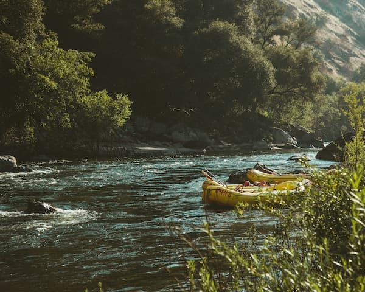

Rafting Compass Adventures

At Rafting Compass Adventures, our mission is to provide exciting,
safe, and unforgettable white water rafting experiences. We believe
that outdoor adventures bring people together, encourage teamwork,
and create lasting memories. Our experienced guides are committed to
helping every visitor enjoy the beauty and excitement of the river.
History
Rafting Compass Adventures was founded by a group of outdoor enthusiasts
who wanted to share their passion for rivers and nature. What began as a
small rafting operation has grown into a company dedicated to offering
safe and memorable adventures for families, friends, and travelers.

Over the years, our team has expanded its routes, improved its equipment,
and trained professional guides who understand both river safety and
environmental responsibility. We continue to preserve the adventurous
spirit that inspired our first trip while providing dependable service.